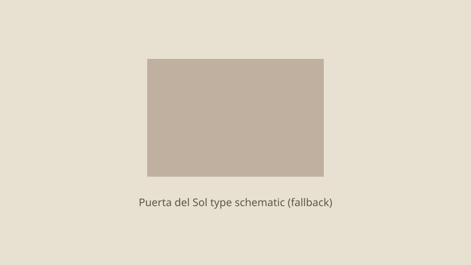

España · vivienda · 28 de septiembre de 2026
Cientos de personas permanecen acampadas en la Puerta del Sol mientras el Gobierno negocia un real decreto de vivienda para el martes.

Lo que coinciden las redacciones
Tras la marcha del sábado 26 de septiembre convocada en torno al desahucio de Maricarmen Abascal, de 87 años, el Sindicato de Inquilinas e Inquilinos de Madrid llamó a permanecer en la Puerta del Sol. El domingo y el lunes por la mañana seguían instaladas cientos de tiendas de campaña; las cifras oscilan entre algo más de 200 según recuentos periodísticos y en torno a 300–600 según organizadores y Delegación del Gobierno en distintas horas. La concentración se ha desarrollado de forma pacífica según Interior; el Ayuntamiento de Madrid ha señalado que la instalación prolongada de tiendas puede chocar con ordenanzas de uso del espacio público.
El presidente del Gobierno, Pedro Sánchez, declaró el domingo que el Ejecutivo trabaja “contrarreloj” para llevar al Consejo de Ministros del martes un real decreto de medidas de vivienda. Fuentes del Ministerio de Vivienda han avanzado un decálogo de líneas de trabajo: protección frente a desahucios sin alternativa habitacional, limitaciones a la compra especulativa por fondos, estabilización de contratos de alquiler, regulación del alquiler de temporada, posibles bonificaciones fiscales para inquilinos y propietarios que bajen rentas, y medidas sobre vivienda turística y parque público. El texto definitivo y el apoyo parlamentario necesario para su convalidación no estaban cerrados el lunes por la mañana.
Lo que es solo declaración
Las consignas de la acampada (“contratos indefinidos”, “o cae el rentismo o cae el Gobierno”) son reivindicaciones políticas, no el articulado del BOE. Las cifras de asistencia a la marcha del sábado (25.000 según Delegación frente a cientos de miles según organizadores) son estimaciones enfrentadas habituales en concentraciones grandes; no hay un recuento único verificable publicado. Las declaraciones de Sánchez y de portavoces de Sumar sobre el contenido del decreto son posiciones de negociación, no el texto aprobado.
Mecanismo que el lector necesita
Un real decreto-ley es una norma con rango de ley que el Gobierno puede dictar en caso de extraordinaria y urgente necesidad; debe ser convalidado por el Congreso en un plazo de 30 días. Las medidas de vivienda tocan competencias estatales (legislación civil de arrendamientos) y autonómicas (ordenación del territorio y vivienda protegida). Por eso el apoyo de grupos parlamentarios —incluidos socios de investidura y posibles abstenciones— condiciona tanto la aprobación como la convalidación posterior.
La Ley de Arrendamientos Urbanos (LAU) fija plazos de prórroga obligatoria y tácita. Ampliar o automatizar prórrogas, limitar actualizaciones de renta o restringir el alquiler de temporada y turístico son cambios que requieren texto legal preciso; los eslóganes de calle no sustituyen ese texto. El desahucio de Maricarmen se ha convertido en símbolo mediático; el procedimiento judicial concreto y la titularidad del inmueble son hechos del caso particular, distintos de la política general de vivienda.
La ocupación prolongada de un espacio público central plantea una tensión jurídica entre el derecho de reunión y manifestación (protegido constitucionalmente) y las competencias municipales sobre la vía pública. La Policía Municipal y la Delegación del Gobierno tienen papeles distintos; la calificación de “asentamiento irregular” o de “concentración pacífica” depende de hechos observados (duración, estructuras fijas, alteraciones del orden) y de la interpretación normativa aplicable.
Lo que esta historia no es
No es la aprobación del decreto. No es un recuento oficial definitivo de acampados. No es una valoración de si las medidas anunciadas bastarán para bajar precios. La imagen principal es una fotografía de localización de la plaza, no de las tiendas ni de enfrentamientos.

Artículos fuente y puntuaciones
| Medio | Titular | T | N | C |
|---|---|---|---|---|
| RTVE | La acampada de Sol, con la mirada puesta en el decreto de vivienda | 93 | −5 | 95 |
| EL PAÍS | Sol vuelve a acampar quince años después del 15-M | 90 | −12 | 88 |
| elDiario.es | El Gobierno ultima un decreto de vivienda | 91 | −10 | 90 |
| El Confidencial | Estas son las diez grandes medidas que quiere llevar el Gobierno al decreto de vivienda | 92 | 0 | 85 |
Imágenes: fotografía de localización de Wikimedia Commons vía Special:FilePath; SVG local. Los pies de foto distinguen tipo/localización del evento. Sin atributo crossorigin.